Built and validated a MATLAB cycle analysis tool against AEDsys with <1% error across all thermodynamic stations
Designed inlet diffuser to recover 96% total pressure at cruise (M 0.85, 12,192 m) through Sovran & Klomp map iteration
Led turbomachinery design across fan, 3-stage LPC, and 6-stage HPC; achieved De Haller ≥ 0.74 and DF ≤ 0.43 at every stage
Drove overall design philosophy of minimizing stage count — 9 compressor stages vs. 13–14 in GE90/GE9X — while meeting all thrust and TSFC targets
11:1
Bypass Ratio
55:1
Overall Pressure Ratio
333 kN
Takeoff Thrust
16 (g/s)/kN
Cruise TSFC
Project Overview
RFP Requirements
Mission: Design a next-gen tactical airlifter (ER-18 - upgraded Boeing C-17 Globemaster III) engine for the USAF.
Engine Requirements
Thrust class: 50,000 to 70,000+ lbf
2 to 4 engines
Power offtake: 200 kW, bleed air: 5 lb/s
Aircraft Requirements
Max takeoff weight: up to 1,000,000 lb
Wing loading: under 175 psf
Payload: up to 50,000 lb (cargo bundles + paratroopers + crew)
Mission the Engine Must Support
Takeoff from short, rough runways in hot conditions
Cruise up to 4,500 nautical miles at high altitude
Low-altitude tactical cruise and cargo airdrop
Aggressive maneuvering (up to 3G turns) with paratroop deployment
Return to base and land on soft, short runways
Performance Targets
Takeoff roll under 7,500 ft (goal) on wet rough runway
Cruise ceiling minimum 30,000 ft
Landing distance under 3,000 ft (goal)
Entry into service: 2030
Our Solution: Atlas-85X
For AE 440 &(AE435), our four-person team answered the RFP with the Atlas-85X — a high-bypass, separate-exhaust, geared turbofan (non-afterburning) — carried from cycle analysis through full component detail design. The primary design challenge was balancing high sea-level thrust against efficient high-altitude cruise, which drove every major architecture decision below.
Bypass ratio 11:1 and overall pressure ratio 55:1, selected to balance takeoff thrust against cruise efficiency
3.2:1 planetary gearbox decoupling the fan from the LP spool for optimal blade speeds at both ends of the spool
Sized for a 1,000,000 lb MTOW airlifter, delivering a 6,940 nm range with flat-rated performance off a 5,400 ft runway
Custom MATLAB cycle tool developed and cross-validated against AEDsys at every station, confirming <1% deviation across all thermodynamic quantities before component design began
Two design points carried through the full analysis: takeoff (SLS, M 0.1) and cruise (M 0.85, 12,192 m)
Inlet, fan, LPC, HPC, combustor, HPT, LPT, and nozzle each designed as individual components with self-consistent boundary conditions
9 total compressor stages vs. 13–14 in benchmark engines (GE90/GE9X), reducing weight and mechanical complexity
Aerodynamic health validated at every turbomachinery stage using De Haller numbers and diffusion factors
Fig. 1: Atlas-85X engine CAD cutaway — single-stage fan, 3-stage LPC, 6-stage HPC, annular combustor, 1-stage HPT, 2-stage LPT, and dual converging nozzlesFig. 2: High-fidelity engine render (3ds Max) showing the fan face, compressor spool, annular combustor, and turbine section
Thermodynamic Cycle Analysis
The cycle was analyzed as a modified Brayton cycle with a separate bypass stream. Two operating conditions governed the design: the design point at 2,134 m / M 0.82, and takeoff at sea level / M 0.10. I built the MATLAB cycle tool to iterate over component efficiencies, pressure ratios, bypass ratio, and cooling bleeds simultaneously, then verified every station total temperature and total pressure against AEDsys outputs. AEDsys is a computational software tool for aircraft engine design and performance analysis, a companion program to the widely used textbook Aircraft Engine Design by Jack D. Mattingly, published by the AIAA. Agreement was within 1% at all stations — confirming the tool was reliable before it was used to bound the turbomachinery design.
Key cycle parameters driving downstream design:
Bypass ratio 11:1 — places ~91% of total air mass flow (635 kg/s total at cruise; 582 kg/s bypass, 52 kg/s core) through the cold stream, the primary thrust producer and the main noise reduction mechanism
Fan pressure ratio 1.3 — low enough to keep fan tip relative Mach numbers subsonic and enable a single-stage design
Overall pressure ratio 55:1 — achieved by LPC × HPC = 3.5 × 15.7; the split was chosen to balance spool speeds and stage loading
Turbine inlet temperature 1,778 K — sets combustor exit conditions and drives the HPT blade cooling budget (5% + 5% bleed allocation)
The h-s diagrams confirmed physically consistent behavior at every stage: low entropy rise through the compressors, large constant-pressure enthalpy addition through the combustor, and smooth work extraction across the turbines. The bypass stream shows only the small enthalpy rise across the fan, confirming the fan is lightly loaded relative to the core cycle.
The axisymmetric subsonic diffuser was designed to deliver uniform, low-distortion flow to the fan face while preserving as much total pressure as possible at both flight regimes. A key finding during inlet iteration was that the corrected mass flow demand at cruise exceeded that at takeoff — an inversion from typical expectation driven by the significant thrust lapse at altitude. As a result, the throat was sized for cruise (Mth = 0.70) rather than takeoff, preventing aerodynamic choking at the dominant operating condition.
Design parameters determined through Sovran & Klomp diffuser map iteration:
Diffuser area ratio A2/Ath = 1.19 · nondimensional length L/R1 = 0.95
Pressure recovery coefficient C̅p = 0.25 · total pressure ratio πd = 0.960
Highlight capture area ratio A0/A1 = 0.90 · diffuser exit Mach M2 = 0.55 at cruise
Trade-off: Accepted a 4% total pressure loss (ideal πd = 0.998 → realized 0.960) rather than chasing the ideal recovery value.
Why: Positioning the design point near the maximum Cp contour — instead of at the theoretical ideal — keeps the diffuser inside its stable operating domain, trading a small thermodynamic penalty for robust off-design margin.
Fig. 5: Sovran & Klomp diffuser performance map — red dot marks the Atlas-85X design point, positioned near maximum pressure recovery within the stable operating domain
The CFM56 engine was used as a baseline reference due to the availability of sectional views, with particular attention given to the axial placement of the spinner relative to station 2.
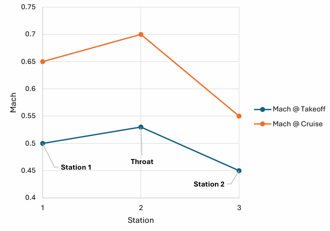
Fig. 6: Mach number distribution — takeoff & cruise
Turbomachinery Component Design
The turbomachinery forms the core of the engine and represents the majority of the design effort. All components were designed using mean-line velocity triangle analysis, with hub and tip solutions verified at three radii. The GE90 uses 13 compressor stages and 8 turbine stages; the Atlas-85X achieves comparable performance with 9 compressor stages and 3 turbine stages.
Design Decision
Trade-off: Accepted moderate deviations in loading and flow coefficients across stages rather than designing each stage for ideal aerodynamic loading.
Why: The guiding philosophy was to minimize total stage count — trading slightly elevated per-stage loading for reduced weight, shorter engine length, and lower system complexity.
Fan — Single Stage
Fig. 7: Fan CAD model (38 rotor blades, 3.65 m diameter) — single-stage geared configuration, πfan = 1.30
The fan operates through a 3.2:1 planetary gearbox decoupled from the LP spool. The gearbox avoids the structural and efficiency penalties of running the large-diameter fan at LP-spool speed, while keeping the transition duct between fan and LPC short.
Fan speed 2,200 RPM · LP spool speed 7,000 RPM
38 rotor blades · 30 stator vanes
Pressure ratio πfan = 1.30 · bypass flow 582 kg/s
Power input 12.3 MW · efficiency 92%
De Haller numbers: 0.77 (rotor) and 0.89 (stator) — confirm adequate stall margin
Degree of reaction spans 0.40 at the hub to 0.95 at the tip
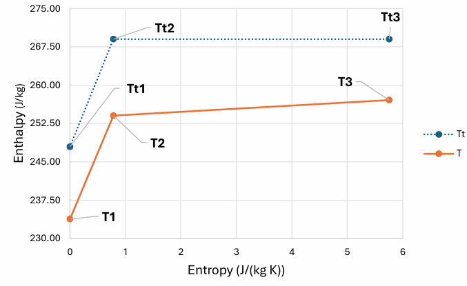
Fig. 8: h-s diagram — fan stage
Design Decision
Trade-off: Introduced a gearbox between the fan and LPC, running the LPC at ~7,000 RPM while the fan runs at ~2,200 RPM — a gear ratio of ~3.2:1, well within the industry-feasible range of up to ~5:1.
Why:Fan efficiency improves at lower rotational speeds, so decoupling the fan from the LPC via the gearbox allowed a lower fan RPM. This RPM choice also minimized the transition duct length between fan and LPC, reducing total pressure losses.
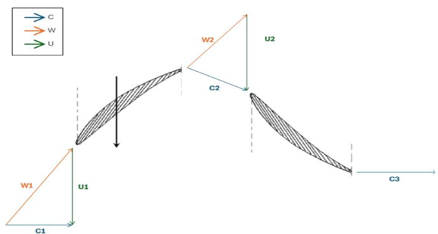
Fig. 9: Velocity triangles — fan stage
Design Decision
Trade-off: Retained a single-stage fan despite a relatively high fan pressure ratio that would normally favor a multi-stage configuration, accepting stage loading and flow coefficients slightly outside commonly recommended ranges.
Why: Additional stages would add system complexity, weight, and cost for only marginal efficiency improvements. A single stage prioritizes reduced weight and complexity at the cost of a slight efficiency reduction — an overall system-level benefit.
Design Decision
Trade-off: Accepted a slightly negative rotor diffusion factor at the hub without further design iteration, even though it draws the average rotor diffusion factor toward the low end of the ≤ 0.45 target (De Haller numbers were held above 0.68 for both rotor and stator).
Why: The average rotor diffusion factor remains positive and close to zero, and all other performance and aerodynamic checks are satisfied — so no further design changes were made, avoiding unnecessary changes to the overall design.
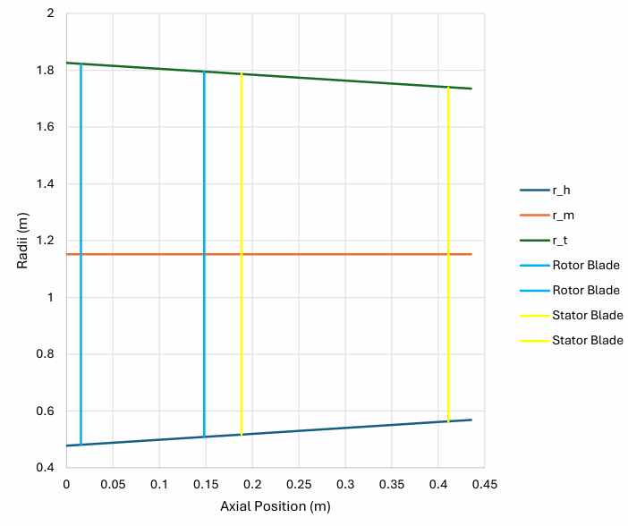
Fig. 10: Meridional view — fan stage
Low-Pressure Compressor — 3 Stages
Fig. 11: Low-pressure compressor CAD model — 3-stage configuration, 40–50 blades per stage, πLPC = 3.5, ηLPC = 0.90
The LPC rotates on the LP spool and compresses core flow from the fan exit. A smooth meridional profile was essential since the LPC exit directly feeds the HPC inlet geometry.
LPC speed 7,000 RPM · core mass flow 53 kg/s
Pressure ratio πLPC = 3.5
Power input 18.9 MW · efficiency 90%
Blade height tapers from 24 cm (stage 1) to 13 cm (stage 3) · mean blade speed 275 m/s
All three stages: De Haller numbers ≥ 0.74, diffusion factors ≤ 0.43
Degree of reaction maintained between 0.5 and 0.9 from hub to tip, ensuring effective compressor performance
Low rotor diffusion factors across all stages indicate lightly loaded rotors with high stall margin
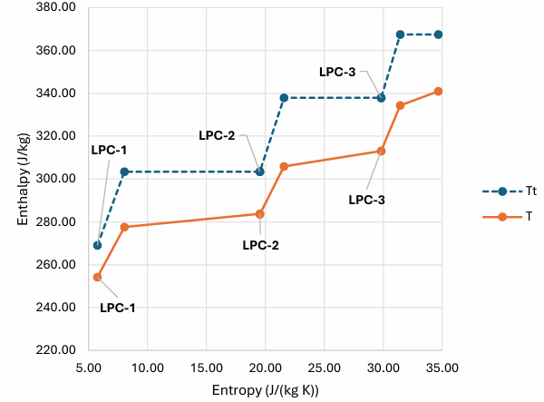
Fig. 12: h-s diagram — LPC
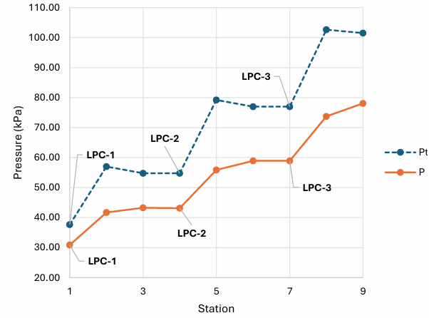
Fig. 13: Pressure vs. station — LPC
A smooth pressure rise is observed across the stages, with each stage achieving a pressure ratio of approximately 1.3 to 1.4.
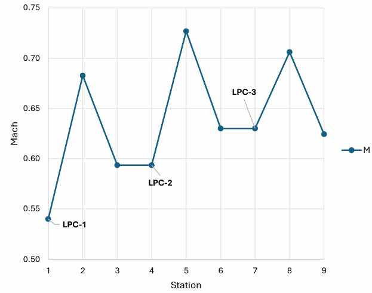
Fig. 14: Mach number vs. station — LPC
Design Decision
Trade-off: Maintained zero exit swirl at the stator exit for each stage, ensuring purely axial flow into the subsequent stage.
Why: Axial inflow to each downstream stage minimizes exit losses. Both absolute and relative Mach numbers remain below 1.4, consistent with recommended compressor design limits.
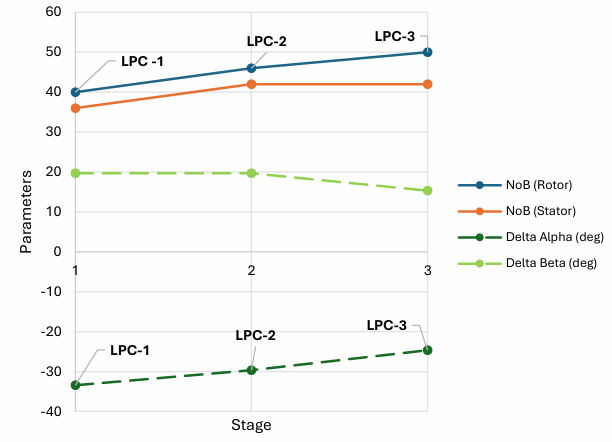
Fig. 15: Stage characteristics — LPC
Blade counts range from approximately 35 to 50 per stage, with camber angles maintained below a magnitude of 45°.
Design Decision
Trade-off: Minimized stage count to a three-stage LPC, accepting a slight reduction in efficiency in exchange for fewer stages — some loading and flow coefficients slightly deviate from recommended ranges, occasionally falling below 0.4 or exceeding 0.6 in magnitude.
Why: A key design priority was to reduce overall weight and cost — fewer stages were favored over the marginal efficiency gain from a more conventional stage count.
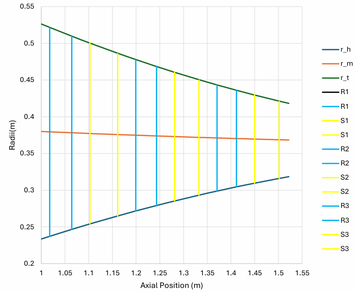
Fig. 16: Meridional view — LPC
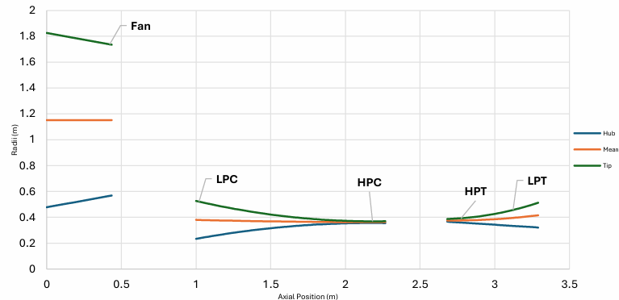
Fig. 17: Radii vs. axial position
High-Pressure Compressor — 6 Stages
Fig. 18: High-pressure compressor CAD model — 6 stages, blade height tapering from 8 cm to 1 cm, πHPC = 15.7, ηHPC = 0.89
The HPC on the HP spool performs the primary compression. The first stage is deliberately front-loaded, allowing downstream stages to ease progressively — this strategy let the HPC reach its full pressure ratio in six stages where reference engines require nine to eleven.
HP spool speed 13,000 RPM
Pressure ratio πHPC = 15.7
Power input 18.9 MW · efficiency 90%
Blade height collapses from 8 cm (stage 1) to 1 cm (stage 6) · meanline blade speed 495 m/s
Stage pressure ratio front-loaded at ~1.95 (stage 1), easing to ~1.37 (stage 6)
60–110 blades per stage
All six stages: De Haller numbers ≥ 0.75, diffusion factors ≤ 0.38
Degree of reaction maintained between 0.8 and 0.92 from hub to tip, ensuring effective compressor performance
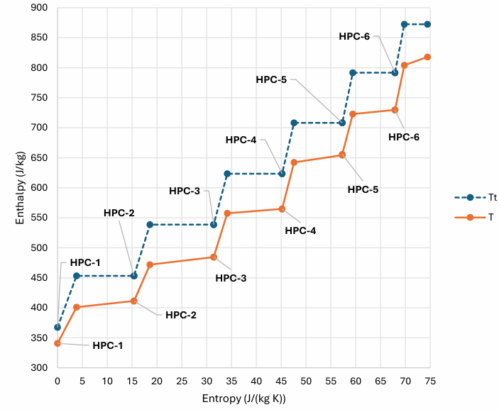
Fig. 19: h-s diagram — HPC
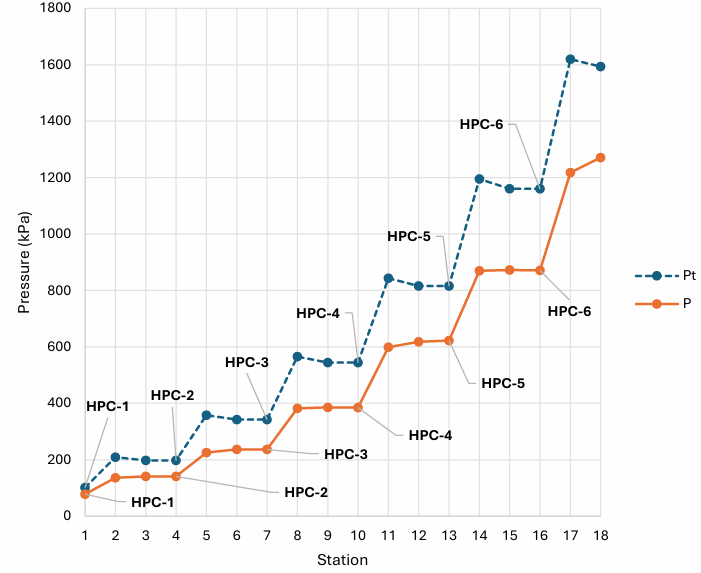
Fig. 20: Pressure vs. station — HPC
Design Decision
Trade-off:Front-loaded the pressure rise, with the first stage operating at a pressure ratio of approximately 1.95 and subsequent stages easing progressively from ~1.7 to ~1.4, down to ~1.37 at the final stage. Although the early-stage ratios are high given the adverse pressure gradient across compressors, they remain within the ≤ ~2.0 limit suggested in academic literature. Combined with slight deviations from recommended loading and flow coefficient ranges, this enabled a six-stage HPC.
Why: Together with the three-stage LPC, this yields a nine-stage compressor system for the entire engine. A sanity check against existing engines shows the GE90 and GE9X use approximately 13 and 14 compressor stages, respectively — underscoring the significant complexity reduction achieved.
Trade-off: Maintained zero exit swirl at the stator exit for each stage, ensuring purely axial flow into the subsequent stage.
Why: Axial inflow to each downstream stage minimizes losses. Both absolute and relative Mach numbers remain well below 1.4.
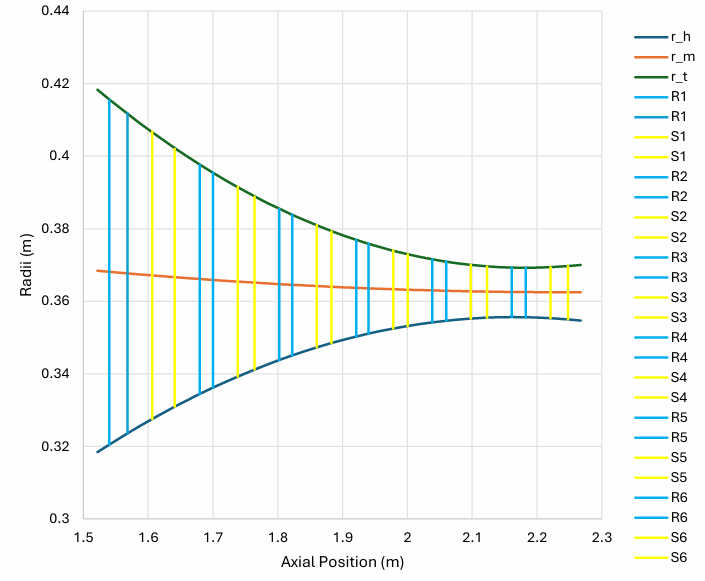
Fig. 23: Meridional view — HPC
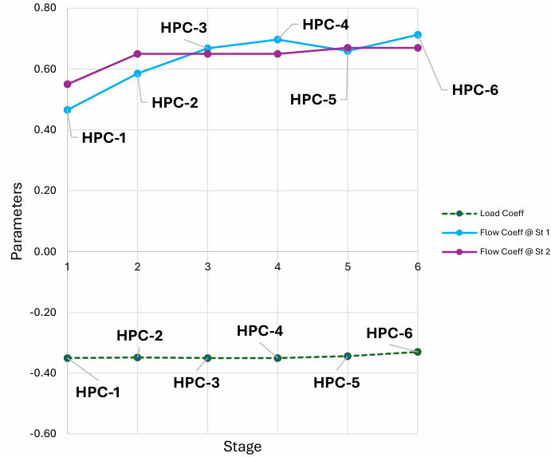
Fig. 24: Stage characteristics — HPC loading and flow coefficients
Design Decision
Trade-off:Minimized stage count to a six-stage HPC, accepting a slight reduction in efficiency in exchange for reduced weight and cost — loading and flow coefficients occasionally deviate from recommended ranges, falling slightly below 0.4 or above 0.6 in magnitude.
Why: A key design priority was to reduce overall weight and cost — fewer stages were favored over the marginal efficiency gain from a more conventional stage count.
Blade counts range from approximately 60 to 110 per stage, with camber angles maintained below a magnitude of 45°.
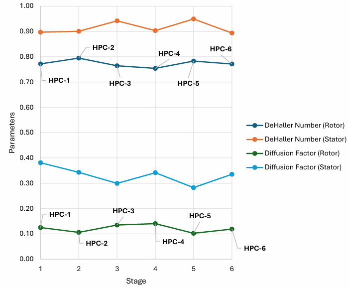
Fig. 26: Airfoil health — HPC De Haller numbers and diffusion factors
Design Decision
Trade-off: The De Haller number for both rotor and stator across all stages was maintained above 0.68, while the average diffusion factor was kept below 0.45.
Why: Slightly lower rotor diffusion factors indicate lightly loaded stages, which reduces the risk of flow separation and improves efficiency — resulting in higher stall margins and a more stable operating range.
Fig. 28: Low-pressure turbine CAD model — two stages
The HPT receives flow directly from the combustor and extracts power to drive the HPC; the LPT extracts power across two stages to drive both the LPC and (through the gearbox) the fan. The three-stage turbine total compares to eight stages in the GE90/GE9X — a substantial complexity and weight reduction.
High-Pressure Turbine — 1 Stage
HP spool speed 13,000 RPM
Power extracted 26.8 MW · efficiency 96%
Blade height 4 cm · meanline blade speed 515 m/s
Low-Pressure Turbine — 2 Stages
LP spool speed 7,000 RPM
Power extracted 18.9 MW across 2 stages · efficiency 92%
Blade height grows from 9 cm (stage 1) to 15 cm (stage 2) · meanline blade speed 300 m/s
Degree of reaction maintained within a range of approximately 0.1 to 0.76 from hub to tip, ensuring effective work extraction across the turbine (HPT+LPT)
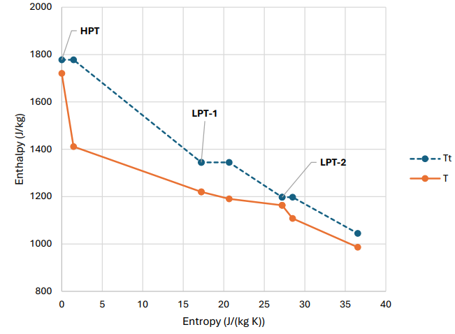
Fig. 29: h-s diagram — HPT & LPT
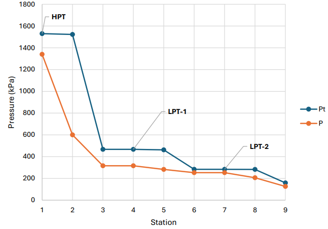
Fig. 30: Pressure vs. station — HPT & LPT
A smooth decrease in pressure and enthalpy was maintained across the stages, avoiding abrupt variations in thermodynamic behavior. The HPT experiences a significantly larger enthalpy drop compared to the LPT due to the high-energy flow entering from the combustor and extracting significant energy to power the HPC.
Trade-off: Maintained zero exit swirl at each stage, ensuring axial flow into downstream components.
Why: This minimizes exit losses. Both absolute and relative Mach numbers remain below 1.3.
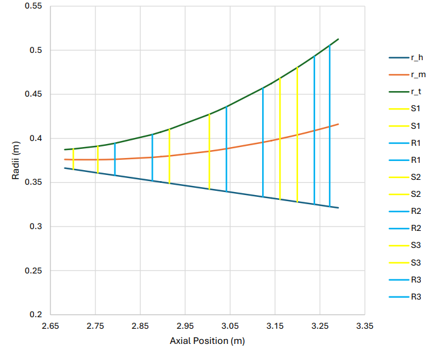
Fig. 33: Meridional view — turbine
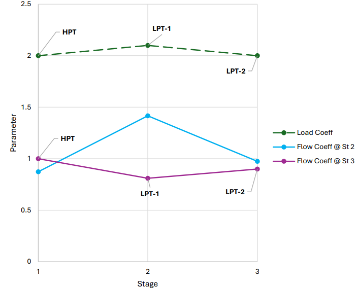
Fig. 34: Stage characteristics — turbine loading and flow coefficients
Design Decision
Trade-off:Minimized stage count to one HPT stage and two LPT stages, accepting a slight reduction in efficiency in exchange for lower system complexity — loading and flow coefficients occasionally deviate from recommended ranges, falling slightly below 0.4 or above 0.6 in magnitude.
Why: A key design priority was to reduce overall weight and cost — fewer stages were favored over the marginal efficiency gain from a more conventional stage count.
Blade counts range from approximately 30 to 70 per stage, with camber angles maintained below a magnitude of 120°.
Combustor Design
The combustor mixes high-pressure air from the HPC with fuel to add thermal energy to the flow before it enters the turbine. An annular configuration was selected for its compact geometry, efficient mixing, and uniform exit temperature distribution, with primary, secondary, and dilution zones ensuring proper combustion and temperature control before the flow reaches the HPT.
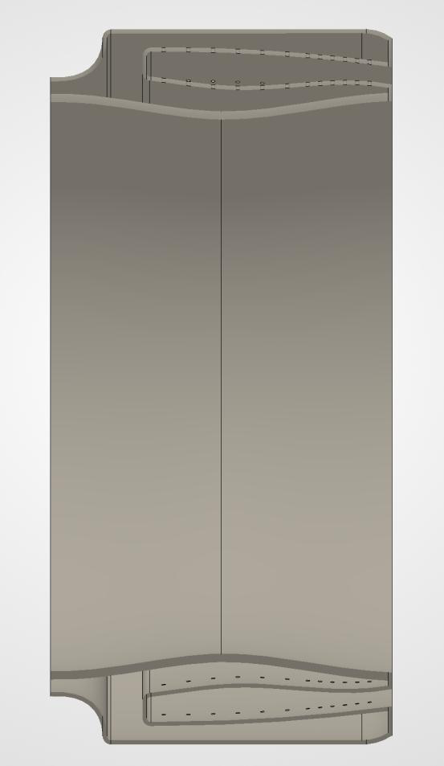
Fig. 36: Combustor CAD model — annular configuration
Inlet total pressure Pt3 = 1,593 kPa · inlet total temperature Tt3 = 873 K
Exit total pressure Pt4 = 1,530 kPa · exit total temperature (turbine inlet) Tt4 = 1,778 K
Pressure drop 4% across the combustor — within modern design limits
Geometry scaled from the TF39 annular combustor reference
Length L = 0.41 m · diameter D = 0.67 m · L/D = 0.62
Residence time tres = 0.01 s, sufficient for complete combustion
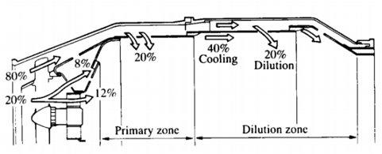
Fig. 37: Airflow distribution — primary and dilution zones
Design Decision
Trade-off:Scaled the TF39 annular combustor down to a low L/D ratio of 0.62, prioritizing reduced size and weight over a more conservative reference geometry.
Why: The compact geometry keeps residence time (0.01 s) adequate for complete combustion while remaining consistent with the overall design philosophy of minimizing weight — integrating cleanly with the upstream HPC and downstream HPT.
Note: The combustor received less design depth than the other components, both in our project and in the course more broadly — the curriculum's emphasis was on the inlet, turbomachinery, and nozzle. Rather than a full detailed design, the combustor was scaled down from the TF39 annular combustor, chosen as a reference engine of a comparable thrust class.
Nozzle Design & Performance Results
The nozzle is the final stage of the engine cycle, converting the high internal energy of the core and bypass streams into kinetic energy to produce thrust. Both streams use convergent-only nozzles in a separate-exhaust, non-afterburning configuration, sized at the cruise design point (M0 = 0.85, h0 = 12,192 m).
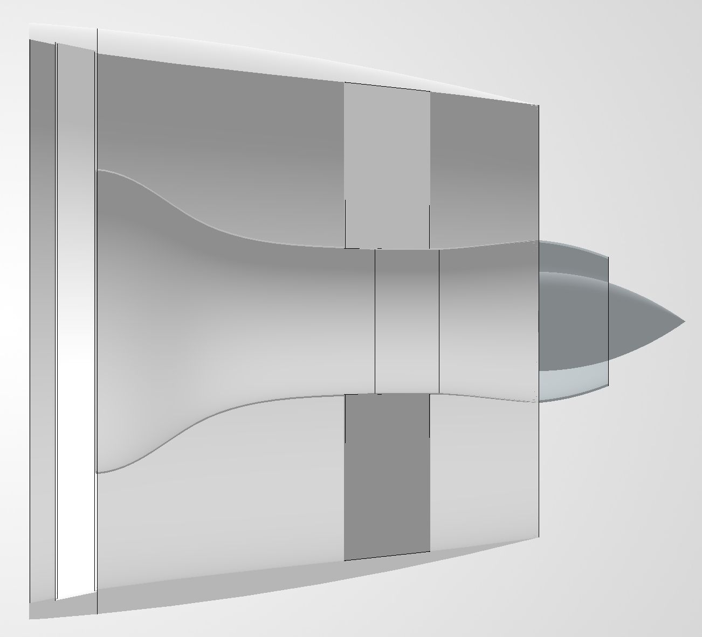
Fig. 40: Nozzle CAD model — convergent core and bypass exhaust
Fig. 41: Core (left) and bypass (right) nozzle performance — static temperature drop and flow acceleration to choked conditions at cruiseFig. 42: Pressure, velocity, and area plots for core (stations 7–9) and bypass (stations 17–19) nozzles — both streams choked at cruise
Core nozzle: accelerates from M 0.6 / 364 m/s at inlet to choked exit at 580 m/s; Tstatic drops from 991 K to 908 K
Bypass nozzle: accelerates to choked exit at 300 m/s; Tt19 = 269 K
Specific thrust: 84 N/(kg/s) · TSFC: 16 (g/s)/kN
Takeoff thrust: 333 kN (sea level, flat-rated)
Design Decision
Trade-off: Evaluated a convergent-divergent (CD) core nozzle against the simpler convergent-only design. At the core's NPR = 8.44, a CD nozzle theoretically yields a ~7.7% core gross thrust gain — above the 5% threshold normally used to justify the added weight. However, with a bypass ratio of 11, the core produces only 21% of total gross thrust, reducing the effective whole-engine gain to just ~1.6%.
Why: The ~1.6% net gain does not justify the added weight, length, and complexity of a diverging section — a convergent-only core nozzle was selected. The bypass nozzle (NPR = 2.00, exit pressure ratio P19/P0 = 1.036) is nearly perfectly expanded, so no CD trade study was required there either.
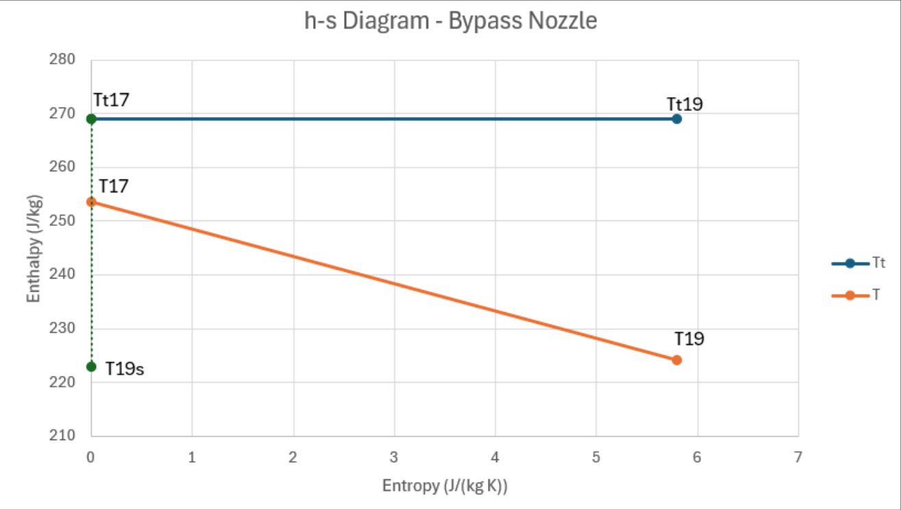
Fig. 43: h-s diagram — bypass nozzle
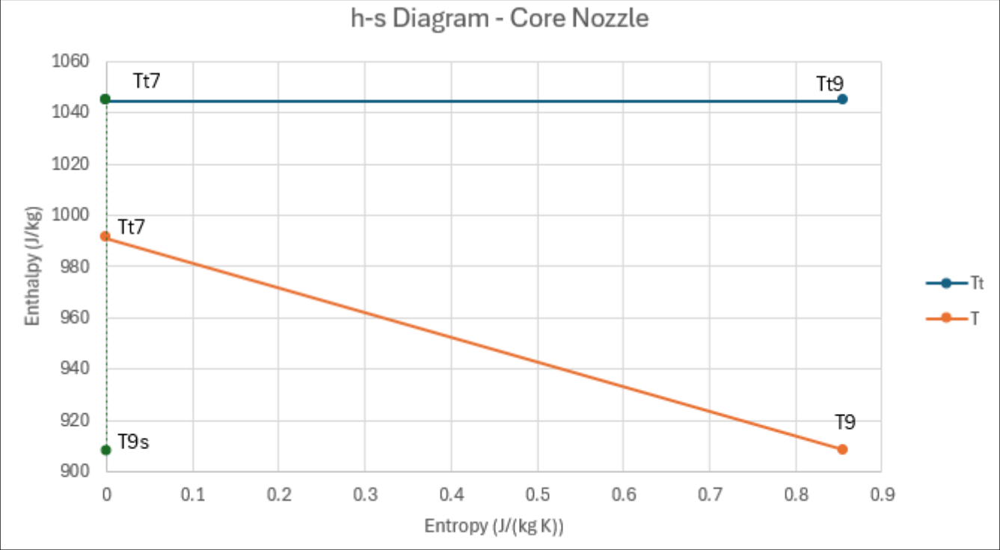
Fig. 44: h-s diagram — core nozzle
Overall Engine Comparison
The engine achieves thrust and TSFC comparable to the GE90 and GE9X while using significantly fewer stages:
9 total compressor stages vs. 13–14 in the GE90/GE9X
3 turbine stages vs. 8 in the GE90/GE9X
Axial length of 6.63 m from inlet to nozzle cone — shorter than the benchmark engines
Trade-off: a moderate reduction in peak isentropic efficiency, accepted in exchange for lower weight and reduced mechanical complexity
The Team
Atlas-85X team — Anuranan Bharadwaj (me), Kalkamanali Satvaldy, Nicholas Pradilla, Vincent Shi
Key Takeaways
Process
Cycle Validation Before Design
Building and validating the MATLAB cycle tool against AEDsys (<1% error) before any component design began was the single decision that kept all boundary conditions internally consistent. Changes propagated correctly through every downstream component.
Turbomachinery
Stage Count as a Design Variable
Treating stage count as a primary design input — not an outcome — drove every turbomachinery tradeoff. Allowing some stage characteristics to drift slightly from their advised ranges, occasionally costing a bit of efficiency, made the 9+3 stage layout possible: structurally lighter and mechanically simpler than benchmark engines.
Fan & Gearbox
Gearbox Enables Fan Efficiency
Fan efficiency improves at lower speeds, so a gearbox between the LPC and fan let each spin at its own optimum: 7,000 RPM vs. 2,200 RPM, a ~3.2:1 ratio — well within the ~5:1 industry capability. It also kept the fan-to-LPC transition duct short, reducing pressure losses.
Nozzle
Nozzle Trade: CD Not Justified at BPR 11
A quantitative trade study showed that a CD core nozzle yields only ~1.6% whole-engine thrust improvement despite a 7.7% core-only gain — because the bypass stream dominates gross thrust at high bypass ratios. This system-level thinking prevented over-engineering a single component at the expense of overall design simplicity.